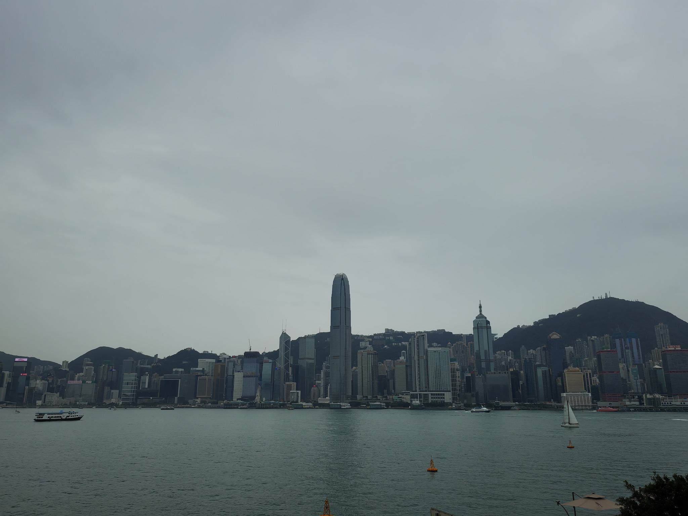
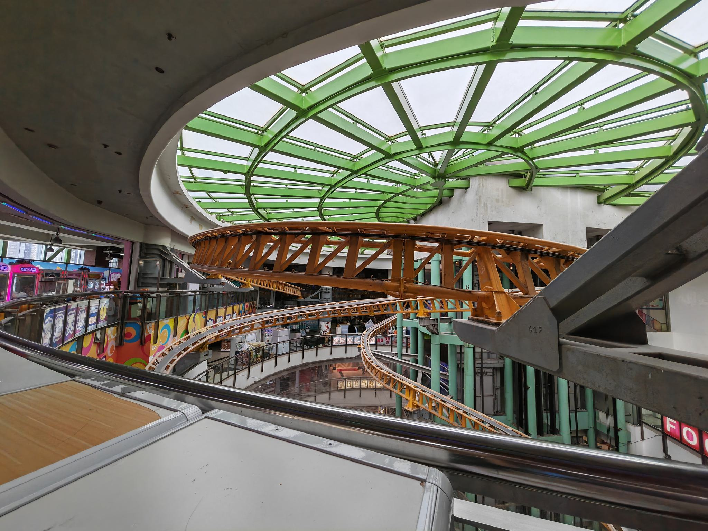

HK第一回
香港印象
话时话啦，过香港真係有滴似返到细个嗰时嘅广州咁嘅感觉。呢度冇推普，做乜都仲係讲粤语。可能对于香港都有咁传统嘅大地嘅嚟讲，有啲现代化嘅变化来得冇咁快。食嘢买嘢倾计，仲用紧现金。
维多利亚港

西九嘅艺术展
西九龙中心嘅室内过山车。
呢度寸土寸金。楼里边一切都逼逼夹夹咁。

EVA相关

CD Warehouse
关于唱片
对于一个重度嘅粤语歌迷嚟讲，香港你一个去几多次都唔会厌嘅地方。
旺角同深水埗嘅唱片铺，足以蚀走半日嘅时间。如果细细地翻寻，两日都唔够睇吖。
顺手安利几个地方~
- 信和中心 -1~2F喺小铺 3F,10F的几间铺头碟都好多，价都唔贵。
- 通菜街的winwin同节拍唱片，碟好全。
- 几间CD Warehouse, 虽然贵小小。
Show
来香港最紧要梗係睇show啦。
之之 The Missing Something音乐会


印象最深嘅係——《天堂有路》！！
（唔啤影相吖``
轩的Revisit

《倾慕》——”倾慕 满泻再泻 紧贴些 这一个漫长夜“

《隐形人》——今天惨被隐形好应该走 我大概不宜苛求 默默的接受
《隐形游乐场》——生活有时残酷 至少这乐园 永不宵禁

大大只轩公。
talk真係好好玩，我谂佢开场栋笃笑係有人睇嘅。
佢整个舞台其实几靓嘅。不过音响有少少…大声过头💦💦
本博客所有文章除特别声明外，均采用 CC BY-NC-SA 4.0 许可协议。转载请注明来自 喂喂喂企鹅哦的小窝！